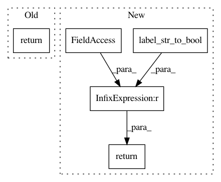

671bde26dc98619355d0005e56c856c6b885c923,secuml/core/data/annotations.py,Annotations,num_instances,#Annotations#Any#,76
Before Change
if label == "all":
return self.ids.num_instances()
else:
return len(self.get_annotated_ids(label=label))
def get_supervision(self, multiclass):
if multiclass:
return self.get_families()
After Change
if label == "all":
return self.ids.num_instances()
else:
mask = self.labels == label_str_to_bool(label)
return np.sum(mask)
def get_supervision(self, multiclass):
if multiclass:
return self.get_families()
In pattern: SUPERPATTERN
Frequency: 3
Non-data size: 5
Instances
Project Name: ANSSI-FR/SecuML
Commit Name: 671bde26dc98619355d0005e56c856c6b885c923
Time: 2019-09-03
Author: anael.beaugnon@ssi.gouv.fr
File Name: secuml/core/data/annotations.py
Class Name: Annotations
Method Name: num_instances
Project Name: ANSSI-FR/SecuML
Commit Name: 9685df29213e5943d2774f80e21564f4204823ec
Time: 2019-09-03
Author: anael.beaugnon@ssi.gouv.fr
File Name: secuml/core/data/annotations.py
Class Name: Annotations
Method Name: get_annotated_ids
Project Name: ANSSI-FR/SecuML
Commit Name: 9685df29213e5943d2774f80e21564f4204823ec
Time: 2019-09-03
Author: anael.beaugnon@ssi.gouv.fr
File Name: secuml/core/data/annotations.py
Class Name: Annotations
Method Name: get_families_values